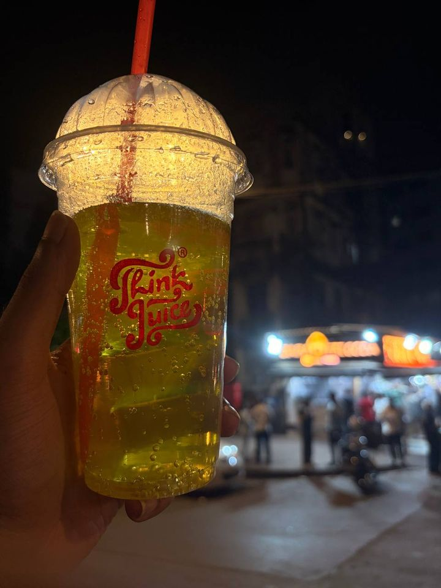

Behind the Press: The Lore Behind Our Viral Ratnagiri Mango Thickshake
Think Juice · Read time: 2 mins
The juice that had everyone in the DMs asking for the secret ingredient? Yeah, we’re finally dropping the lore behind our viral summer bestseller.
It all started back in April during peak heat. The humidity was hitting triple digits, and our local farmer connection in Ratnagiri, Maharashtra sent over a surprise shipment of sun-ripened, organic Alphonso (Hapus) mangoes. The second we unpacked the wooden crates, the entire kitchen filled with that rich, buttery aroma—no exaggeration, you could literally smell them from down the block.
Fresh from the counter.
We weren’t even trying to drop a new menu item that day. It was just a post-rush break for the crew. We chopped up those golden-orange, completely fiberless Ratnagiri mangos, threw them into the blender with chilled organic milk, and blended it down—no artificial syrups, no artificial ice cream filler, just pure, thick fruit.
The second we poured it into a glass and took a sip, the entire kitchen went completely silent. It wasn’t just a drink; it was giving ultimate main character energy in a cup.
Naturally, we put out a few unreleased tester cups on the counter for our regular afternoon crowd:
The 3 PM WFH Slump: A guy working on his laptop took one sip, closed his eyes, and literally paused his Zoom call just to ask if he could buy a liter to take home.
The Post-Workout Crew: A group coming straight from the gym swapped their usual protein smoothie for it, claiming it was “the only thing keeping them alive in this heat.”
The Instagram DMs: By 4 PM, our inbox was completely blown up:
“WHAT WAS THAT GOLDEN DRINK?!”
“Is this on the secret menu or what? I need a whole batch immediately.”
“Are you using actual Ratnagiri Hapus or what?? It tastes insane.”
So, what’s the actual secret behind the hype?
It’s zero shortcuts. Authentic Ratnagiri mangoes grow in laterite soil right along the Konkan coast, which gives them a rich sweetness and a velvety, melt-in-your-mouth texture you just can’t fake with cheap purees. The plot twist? We freeze the fresh mango chunks at peak ripeness before blending. That’s how we get an insanely thick, ice-cream-like consistency while keeping it 100% real fruit.
Real Ratnagiri mango season is short, sweet, and living rent-free in everyone’s head.
OUR STORY
From marketing desks to the Mahim counter: the Lata Lokhande story
Think Juice · Read time: 3 mins
Lata Lokhande, in sketch.
Every franchise begins with a person who looks at a question and decides to say yes. In Mahim, that person is Lata Lokhande.
Eight years of marketing
Lata holds a B.A. and an MBA, and she spent eight years working in marketing. That is a long time to watch what makes people choose one brand over another, and it gave her a sharp eye for what a business needs to grow.
The Roo Bowl
Marketing wasn’t the only thing she was building. Lata also started, and managed, a startup of her own called The Roo Bowl, built around healthy salad and protein bowls. It was her first hands-on chapter in food and beverage, and it deepened an interest that was already there.
“My experience in marketing and interest in the food and beverage industry motivated me to explore a business opportunity in this sector.”
Why Think Juice
When she looked at the options, Think Juice stood out for three reasons.
An established brandA name people already recognise.
A diverse rangeA wide range of products, with something for everyone.
The right modelA business model that suited the Mahim location and its family-oriented customers.
Saying yes to Mahim
That combination encouraged her to take up the Think Juice franchise. A marketer, a founder and a lover of good food became the person behind the counter, serving one glass at a time.

Think Juice, after dark.
Next time you’re passing by, stop in and say hello.
RECIPES
Strawberry milkshake at home: real strawberries, real ice cream, 5 minutes
Recipe · Read time: 2 mins
Creamy, dreamy and berry delicious. Here’s the classic strawberry shake you can make at home, with nothing but real ingredients.
Ingredients (makes 2 glasses)
1 cup (about 150 g) fresh strawberries, hulled and sliced
1 to 2 tablespoons sugar or honey, optional, depending on how sweet your berries are
Whipped cream and a few whole strawberries to finish, optional
Method
Hull and slice the strawberries. If they are tart, toss them with the sugar and leave them for 10 minutes so they soften and release their juice.
Add the ice cream, ½ cup of milk, the vanilla and the strawberries to a blender.
Blend for 30 to 60 seconds, until smooth and creamy.
Check the texture. For a thicker shake, add another scoop of ice cream. For a thinner one, blend in a splash more milk.
Pour into chilled glasses, top with whipped cream and a strawberry, and serve right away with a wide straw.
Tips
Choose an ice cream made with real milk and cream, so you taste the strawberries and not the additives.
Frozen strawberries make the shake thicker and colder. Use 1 cup, straight from the freezer.
Chill your glasses in the freezer for 10 minutes before pouring.
Creamy, dreamy and berry delicious.
BENEFITS
Fresh ABC juice: what apple, beetroot and carrot bring to your glass
Benefits · Read time: 2 mins
A fresh blend of apple, beetroot and carrot: sweet, earthy and a gorgeous ruby red.
What goes into the glass
AppleVitamin C and natural sweetness that softens the earthiness of beetroot.
BeetrootNaturally rich in nitrates, which are linked to healthy blood flow, plus folate and potassium.
CarrotBeta-carotene, which the body turns into vitamin A for eyes and skin.
Why people love it
Refreshing and hydrating, served cold and fresh.
An easy way to eat the rainbow, with fruit and vegetables in one glass.
Naturally sweet, because the apple balances the beetroot.
Packed with colour, thanks to antioxidant-rich beetroot and carrot.
Worth knowing
No study has tested ABC juice as a combination, so its benefits are the benefits of the apple, beetroot and carrot in it. It’s a nutritious drink, not a detox, treatment or cure. Juice has less fibre than whole fruit and vegetables and contains natural sugars, so enjoy it fresh as part of a balanced diet.
Beetroot can turn your urine or stool pink for a day. That is harmless. If you manage blood pressure or blood sugar, take related medication, or have kidney concerns, check with your doctor first.
Sweet, earthy and ruby red: apple, beetroot and carrot in one glass.
Get a fresh read every week.
Recipes, ideas and news from Think Juice, straight to your inbox.